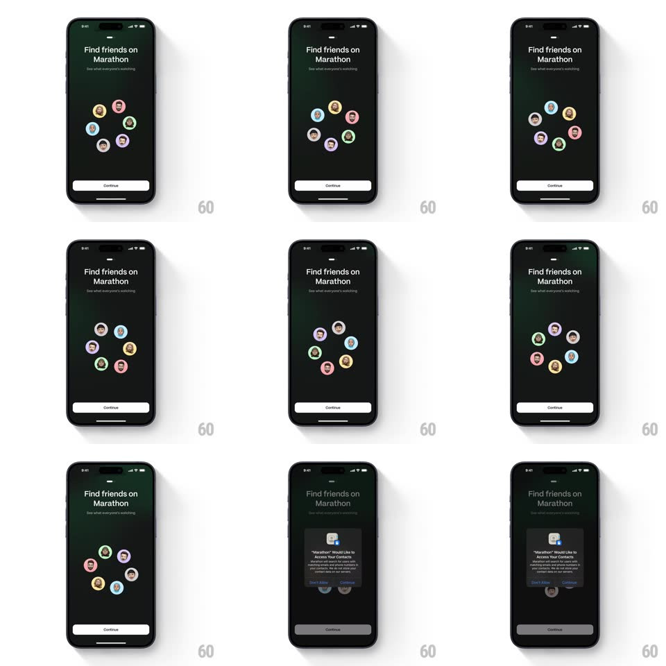

Media
Frame-by-frame

Rebuild this interaction 1:1: Marathon's "Find friends on Marathon" screen - a cluster of circular contact avatars orbiting slowly in a loose ring under the headline, each avatar gently bobbing, until tapping Continue triggers the system contacts permission prompt over the dimmed screen.

Rebuild this interaction 1:1: Marathon's "Find friends on Marathon" screen - a cluster of circular contact avatars orbiting slowly in a loose ring under the headline, each avatar gently bobbing, until tapping Continue triggers the system contacts permission prompt over the dimmed screen. ## Integration Integration: stack-agnostic spec - springs given as stiffness/damping, timed motions as duration + curve; map every value to your framework and animation library of choice. ## Scene Dark onboarding screen: "Find friends on Marathon" headline with subline, six circular avatar thumbnails arranged in a rough ring at center, white Continue pill at the bottom, page indicator dot top. ## Motion spec Pattern: orbiting avatar ring. - The avatar ring rotates continuously (one full revolution ~24s, linear, clockwise) around the screen's center; each avatar counter-rotates so its photo always stays upright. - Each avatar also bobs on its own phase-offset loop (translateY +/-5px, 2.4s-3.2s per avatar) so the ring feels alive, not mechanical. - Entry: avatars scale in from the center one by one (scale 0 -> 1, spring ~320/22, 60ms stagger) as the ring begins turning. - Tap Continue: the ring slows to a stop (decelerate over 400ms) and the iOS contacts permission alert slides/fades up center-screen while the background dims to 50%. ## Calibration - Counter-rotation keeps faces upright - the ring turns, the people don't. - Bobbing phases are all different - no two avatars move in sync. ## Reduced motion Static ring, no orbit or bob; avatars fade in. ## Don't miss - Avatars have thin colored ring borders (each a different pastel) - not plain circles. - The permission prompt is the real system alert, dimming the whole screen behind it.